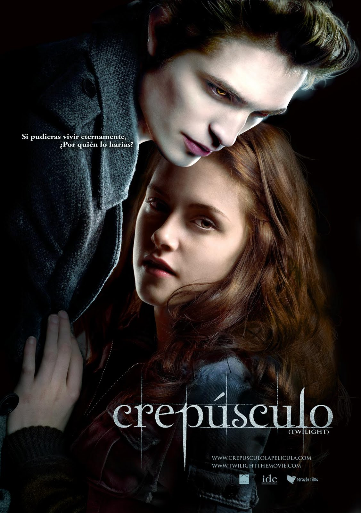

Películas de la Saga Crepúsculo
Crepúsculo (Twilight)
Directora: Catherine Hardwicke
Año de estreno: 2008
Sinopsis: Bella Swan se muda a Forks y se enamora de Edward Cullen, un vampiro, enfrentando los peligros de su mundo.

Luna Nueva (New Moon)
Director: Chris Weitz
Año de estreno: 2009
Sinopsis: Edward deja a Bella, quien se acerca a Jacob Black y descubre el mundo de los licántropos.

Eclipse
Director: David Slade
Año de estreno: 2010
Sinopsis: Bella debe decidir entre Edward y Jacob mientras una amenaza de vampiros neófitos pone en peligro a Forks.
Director: Bill Condon
Año de estreno: 2011
Sinopsis: Bella y Edward se casan y enfrentan complicaciones con el embarazo de Bella.
Amanecer - Parte 2 (Breaking Dawn Part 2)
Director: Bill Condon
Año de estreno: 2012
Sinopsis: Bella, ahora vampira, protege a su hija Renesmee de una amenaza de los Vulturi.